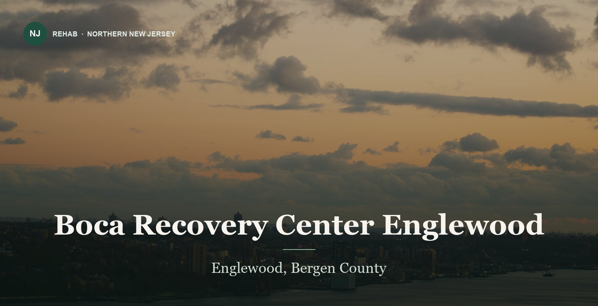

Ranked 06 of 6
Boca Recovery Center — Englewood
Englewood, NJ · Bergen County
The Northern New Jersey site of a multi-state operator, listing medical detox, mental health services and specialized trauma and eating disorder therapy alongside outpatient care.


At a glance
- Levels of care
- Medical detox, MAT, mental health services, outpatient
- Licensing
- Not published on site
- Accreditation
- Not published on the location page
- Notable
- Also operates in Galloway and Ventnor City, NJ, plus FL, IN and MA
Worth a look for specialized therapy needs, particularly trauma and eating disorders, which few centers in this group name at all. Location-level program detail is thinner than the national pages suggest, so confirm what runs at Englewood specifically rather than company-wide.
*Provider-reported information, current as of August 2026; confirm before admission. Inclusion does not imply endorsement. Details can change.
A claim that does not check out
Boca Recovery Center publishes this on its own website:
No location-level license published. Accreditation not stated for the Englewood site
Company-wide materials only. Nothing verifiable is published for the Englewood address specifically, and a multi-state operator's national page is not evidence about one location.
What this does and does not mean
We could not establish that Boca Recovery Center is unlicensed, and nothing here should be read that way. A facility can hold a perfectly valid New Jersey license and still publish a wrong sentence about it — treatment websites are routinely built from recycled templates, and a licensing line copied from an out-of-state original is the most likely explanation.
What we can say is narrower and still matters: the sentence gives a reader nothing they can check. A licensing claim exists so that a family can verify it at 11pm before making a phone call. One that names a regulator in the wrong state cannot be verified by anyone, which is why our algorithm scores it at zero rather than at face value.
What to do about it
- Ask Boca Recovery Center directly for its New Jersey DMHAS license number and the name on the license.
- Check that number against the New Jersey Substance Abuse Monitoring System treatment directory.
- Ask which entity holds the license, and whether it is the same entity operating the Englewood, NJ address.
Quoted from the center’s own website in August 2026. New Jersey licenses substance use disorder treatment through the Division of Mental Health and Addiction Services in the Department of Human Services, and through the Department of Health; it has no Department of Health Care Services. If this has since been corrected, we will update it — the claim, not the center, is what is being assessed.
How it scores
Four dimensions, weighted equally. These measure the clarity and breadth of publicly available information—not treatment outcomes or patient satisfaction. How we review →
Clinical clarity
3.5Company-wide pages are detailed, but it is often unclear which services run at Englewood as opposed to another location in the group.
Medical support
4.3Medical detox and medication-assisted treatment are both listed at the Englewood location.
Program depth
4.0Specialized trauma and eating disorder therapy is named, which almost no other center in this group offers.
Continuing care
3.8Multi-state footprint could support continuity across a relocation, but this is not described in detail.
Who it fits
- People who need trauma or eating disorder treatment alongside substance use care
- Anyone who may need medical detox in Bergen County
- People who might relocate and want a provider with sites in several states
Who it does not
- Anyone who wants a single local program with everything documented at the address they will drive to
- People who need to confirm accreditation before making contact
Paying for it
- Commercial insurance
- Insurance accepted; carrier detail is company-wide rather than location-specific
- Medicaid / Medicare
- Not published for the Englewood location
- Self-pay
- Rate not published
Verify coverage against the Englewood location specifically. Multi-state operators frequently hold different contracts per site, and a national page is not evidence about a particular address.
Cost and coverage compared with Valley Spring Recovery Center →
What to ask them
Specific questions for this center, based on what its own materials leave open.
- Which of your listed services actually run at the Englewood location?
- What is the license number for the Englewood site specifically?
- Is the eating disorder program medically supervised, and at what level of care?
- If I start at Englewood, where would I step down to?
Compare with the others
- 01Valley Spring Recovery CenterNorwood, NJ3.2
- 02BlueCrest Recovery CenterWoodland Park, NJ1.6
- 03IKON Recovery CentersSaddle Brook, NJ1.5
- 04ChoicePointFair Lawn, NJ1.0
- 05North Jersey Recovery CenterFair Lawn, NJ0.8
Alternatives to Boca Recovery Center · Is Boca Recovery Center worth it? · All six side by side